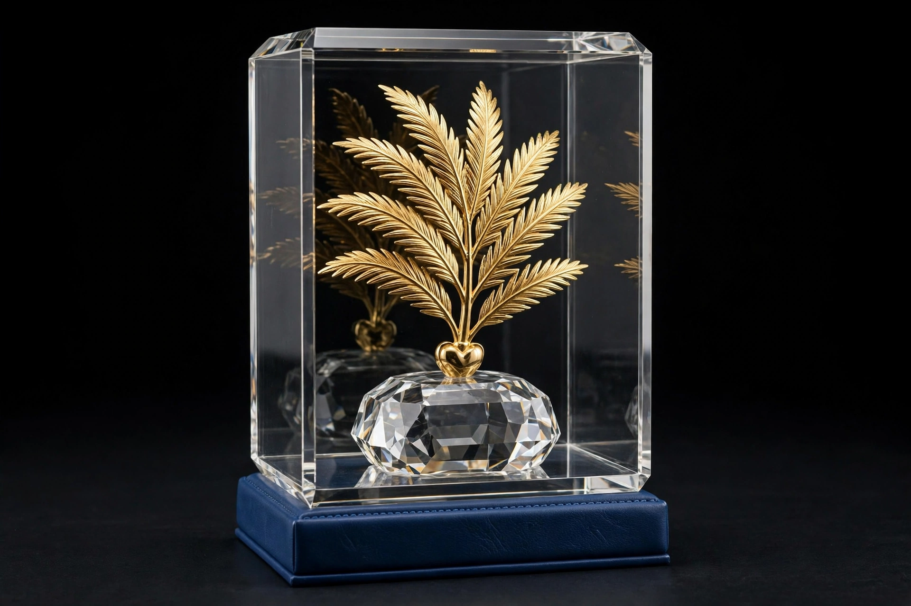

Palme d'Or
| Palme d'Or | |
|---|---|
 | |
| Country | France |
| Presented by | Cannes Film Festival |
| First awarded | 1955 |
| Website | festival-cannes.com |
The Palme d'Or (French for "Golden Palm") is the highest prize awarded at the Cannes Film Festival. It was introduced in 1955 by the festival's organizing committee. Previously, from 1939 to 1954, the highest prize at the festival was the Grand Prix du Festival International du Film. In 1964, the Palme d'Or was replaced again by the Grand Prix, before being reintroduced in 1975.
The Palme d'Or is widely considered one of the most prestigious awards in the film industry. Winning it can significantly boost a film's international profile and box office performance.
History
In 1954, the festival decided to present an award annually, titled the Grand Prix of the International Film Festival, with a new trophy designed each year by a contemporary artist. The festival's board of directors invited several jewellers to submit designs for a prize in the shape of a palm, in tribute to the coat of arms of the city of Cannes, which features a palm. The original design, by jeweller Lucienne Lazon, had the base of the stem cut diagonally and the tip of the frond touching a heart shape.
In 1955, the first Palme d'Or was awarded to Delbert Mann for Marty. From 1964 to 1974, the award was temporarily replaced by the Grand Prix du Festival. In 1975, the Palme d'Or was reintroduced and became the symbol of the festival.
The trophy
Since its reintroduction in 1975, the trophy has been redesigned several times. The current design, produced by the Swiss jeweller Chopard since 1998, consists of a hand-cut crystal block containing a 24-carat gold palm frond weighing 118 grams. The trophy is presented in a case of blue Moroccan leather.
Notable winners
Films that have won the Palme d'Or include The Wages of Fear (1953, Grand Prix), La Dolce Vita (1960), The Leopard (1963), M*A*S*H (1970), Taxi Driver (1976), Apocalypse Now (1979, shared), Sex, Lies, and Videotape (1989), Pulp Fiction (1994), The Piano (1993), Rosetta (1999), The Pianist (2002), Amour (2012), Parasite (2019), and Anora (2024). Parasite went on to win the Academy Award for Best Picture, the first Palme d'Or winner to do so since Marty.
Only a handful of directors have won the Palme d'Or twice, including Francis Ford Coppola, Michael Haneke, Ken Loach, Ruben Östlund, and the Dardenne brothers. Jane Campion was the first female director to win, for The Piano in 1993; Julia Ducournau became the second solo female winner in 2021 with Titane, and Justine Triet the third in 2023 with Anatomy of a Fall.
See also
- Golden Bear, the top prize at the Berlin International Film Festival
- Golden Lion, the top prize at the Venice Film Festival
- Cannes Film Festival